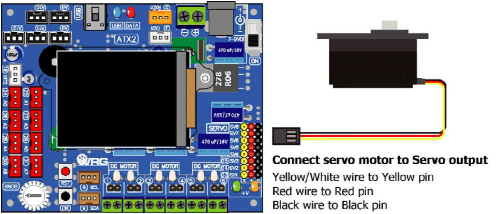

4.2.6 Servo motor library
This is library for control the servo motor of ATX2 board. It has 8 servo motor outputs. It can drive each output or all in same time.
There is only one function in this library. It is servo.
Syntax
void servo(unsigned char _ch, int _angle)Parameter
_ch - Servo motor output. It is 1 to 8
_pos - Servo motor shaft position. It is 0 to 180 and -1.
If set to -1, it means stop that servo motor output
Example 4-15
#include <ATX2.h> // Include main library
void setup()
{
OK(); // Check the OK switch pressing
}
void loop()
{
servo(0,60); // Drive servo motor0 to 60 degress position
sleep(5000); // Delay 5 seconds
servo(0,120); // Drive servo motor0 to 120 degree position
sleep(5000); // Delay 5 seconds
}
Original manual, page 66